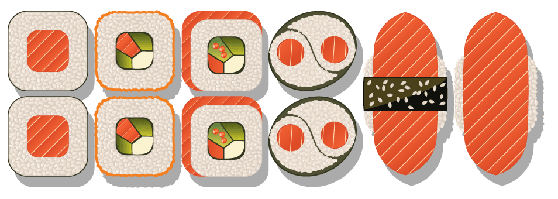

Shima Village is Victoria’s newest attraction. We are conveniently located at 1218 Wharf Street, at the heart of downtown Victoria, in one of the city’s beautiful heritage buildings. We feature an eclectic menu of affordable Japanese cuisine which includes items like healthy steamed Edamame, crunchy California Rolls, crispy Tempura, and mouth-watering Sushi.
